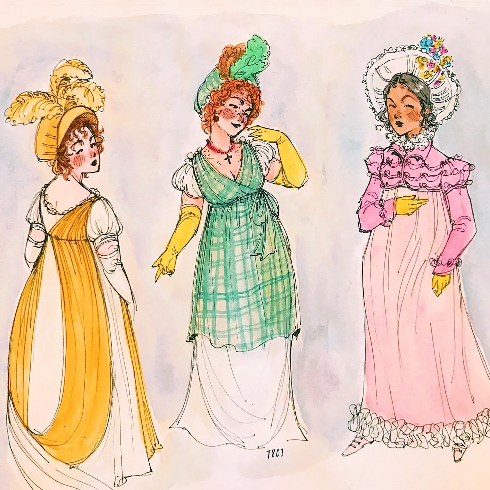

Hilary Havens and Gerard Cohen-Vrignaud
Artwork by Maggie Stroud
Every word of dialogue in Jane Austen's six novels, attributed to its speaker — explore who speaks, how much, and where, from the Austen Said scholarly editions.
Loading…
Preparing the database…
Novel Character